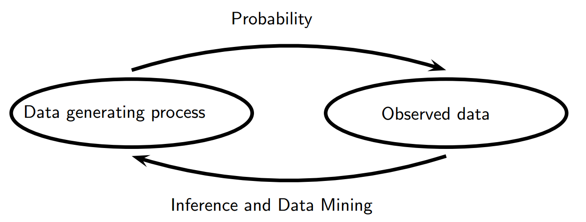

统计理论¶
第一部分概率论：不确定性，统计推断的基础
给一个数据生成的过程，结果的属性是什么？
第二部分统计推断和他的近亲，数据挖掘和机器学习
给出数据的结果，我们能说数据生成的过程是怎么样的？
预测，分类，聚类，估计是统计推断。数据分析，机器学习和数据挖掘是统计推断的应用
统计、数据挖掘字典
| 统计 | 计算机科学 | 含义 |
|---|---|---|
| 估计 | 学习 | 使用数据去估计未知的属性 |
| 分类 | 监督学习 | 通过X预测离散的Y |
| 聚类 | 非监督学习 | 把数据分组 |
| 数据 | 训练样本 | (X1,Y1),…,(Xn,Yn) |
| 协变量 | 特征 | Xi’s |
| 分类器 | 假设 | 协变量到结果的映射 |
| 假设 | – | 参数空间 的子集 |
| 置信空间 | – | 空间包含未知属性 |
| 有向非循环图 | 贝叶斯网络 | 多维分布给定条件独立关系 |
| 贝叶斯推断 | 贝叶斯推断 | 统计方法通过数据更新信念 |
| 频率推断 | – | 通过保障频率方法的统计方法 |
| large deviation bounds | PAC学习 | uniform bounds on probability of errors |
图片 .. image:: _static/概率和推断.png